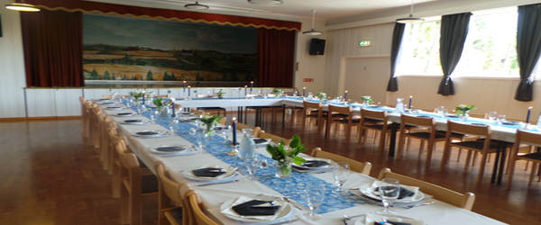
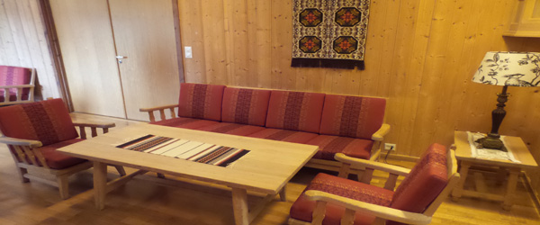

Lokaler
Storstue
Fossnes grendehus kan tilby en stor sal med plass til 125 personer. Salen kan også deles inn, og storesalen består da av 2/3 av arealet.
Dette er et lyst og luftlig lokale, med god takhøyde og vinduer langs veggene.
Salen inneholder en scene med lydutstyr, lerret og prosjektor. Lydanlegget består av høytalere, forsterker, cd spiller og muligheten for å koble på annet utstyr.
Liten stue
Denne salen er en mindre avgrenset del av storesalen. Det er her plass til rundt 40 personer og salen egner seg mer for mindre arrangementer.
Det er bar i hjørnet av rommet, med tilgang fra kjøkkenet.
Ekstra stoler og bord er tilgjengelig til å sette inn i begge salene.
Kjøkken
Vi har et stort kjøkken med nok av benkplass og nødvendig utsyr.
Det er rikelig med kjeler, panner og annet utsyr.
Det er også mulig å leie blant annet bestikk og servise, lysestaker og blomstervaser
Blandt utstyret finner du:
- Komfyr - Kjøleskap- Kjølerom- Fryseboks - Microbølgeovn- 2 Kaffetraktere -Vannkoker
Møterom
Møterommet ligger inntil den store salen og nære kjøkkenet. Det er nærme innganegn og med egen gjennomgang til store salen.
Det er 2 koselige sofagrupper, og rommet kan romme opptil 20 personer.
Ved leie av dette rommet og kjøkkenet har du et fint møterom med mulighet for servering.